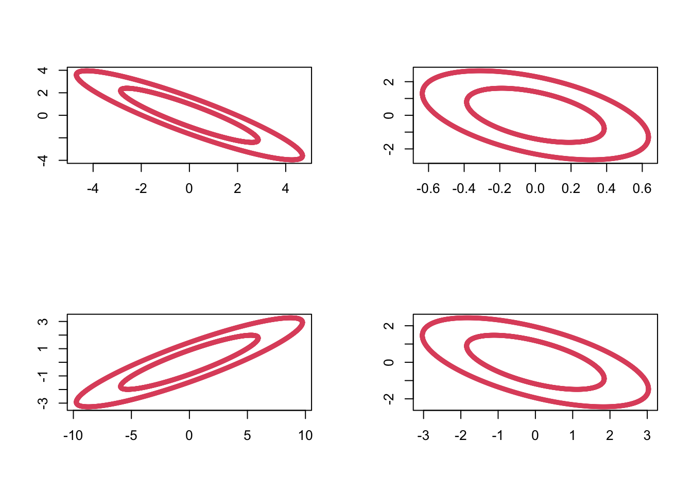

5.2 The Wishart distribution
In univariate statistics the \(\chi^2\) distribution plays an important role in inference related to the univariate normal, e.g. in the definition of Student’s \(t\)-distribution.
The Wishart distribution is a multivariate generalisation of the univariate \(\chi^2\) distribution, and it plays an analogous role in multivariate statistics.
In this section we introduce the Wishart distribution and show that for MVN random variables, the sample covariance matrix \(\bS\) has a Wishart distribution.
Note:
\(W_p(\bSigma,n)\) is a probability distribution on the set of \(p \times p\) symmetric non-negative definite random matrices.
Recall that if \(z_1, \ldots, z_n \sim N(0, 1)\), then \[\sum_{i=1}^n z_i^2 \sim \chi^2_n.\] Thus we can see that the Wishart distribution arises from the same kind of process: it is the sum of zero mean (multivariate) normal random variables squared.
In particular, note that when \(p=1\), \(W_1(1,n)\) is the \(\chi_n^2\) distribution and \(W_1(\sigma^2,n)\) is the \(\sigma^2 \chi_n^2\) distribution.
If \(\bX\) is the usual \(n \times p\) matrix with rows \(\bx_i^\top\), then \[\bM = \bX^\top \bX.\]
We can sample from the Wishart distribution in R using the rWishart command. For example, setting \(\bSigma =\bI_2\) and using 2 degrees of freedom, we can generate 4 random samples \(\bM_1, \ldots, \bM_4 \sim W_2(\bI_2, 2)\) as follows:
out <- rWishart(n=4, df=2, Sigma=diag(1,2))Visualizing these by plotting the ellipses with \(\bx^\top \bM_i \bx=c\) for some constant \(c\), we can see the variability in these random matrices:

5.2.1 Properties
We now use the definition of \(W_p(\bSigma, n)\) to prove some important results.
Proof. From the definition, let \(\bM = \sum_{i=1}^n \bx_i \bx_i^\top\), where \(\bx_i \sim N_p(\bzero,\bSigma)\). Then \[\begin{align*} \bA \bM \bA^\top &= \bA \lb \sum_{i=1}^n \bx_i \bx_i^\top \rb \bA^\top\\ &= \sum_{i=1}^n (\bA \bx_i)(\bA \bx_i)^\top = \sum_{i=1}^n \by_i \by_i^\top \end{align*}\] where \(\by_i = \bA \bx_i \sim N_q(\bzero,\bA \bSigma \bA^\top)\), by Proposition 5.1. Now we apply the definition of the Wishart distribution to \(\by_1,\ldots,\by_n\) and, hence, \(\sum_{i=1}^n \by_i \by_i^\top \sim W_q\lb \bA \bSigma \bA^\top, n \rb\).
Note that an alternative way to write this is as \[\frac{ \ba^\top \bM \ba }{ \ba^\top \bSigma \ba } \sim \chi_n^2.\]
Proof. Applying Proposition 5.7 with \(\bA = \ba^\top\), we see \(\ba^\top \bM \ba \sim W_1( \ba^\top \bSigma \ba, n)\).
If we let \(z_i \sim N(0,1)\), and \(\sigma = (\ba^\top \bSigma \ba)^\frac{1}{2}\), then \(\sigma z_i \sim N(0, \ba^\top \bSigma \ba)\). Thus \[\begin{align*} \sum_{i=1}^n \sigma^2 z_i^2 &\sim W_1(\ba^\top \bSigma \ba, n) \quad \mbox{by the definition of the Wishart distribution}\\ &= \sigma^2 \sum_{i=1}^n z_i \\ &\sim (\ba^\top \bSigma \ba)\chi^2_n \quad \mbox{by the definition of} \chi^2. \end{align*}\]
Proof. From the definition, let \(\bM_1 = \sum_{i=1}^{n_1} \bx_i \bx_i^\top\) and let \(\bM_2 = \sum_{i=n_1+1}^{n_1+n_2} \bx_i \bx_i^\top\), where \(\bx_i \sim N_p(\bzero,\bSigma)\), then \(\bM_1+\bM_2 = \sum_{i=1}^{n_1+n_2} \bx_i \bx_i^\top \sim W_p(\bSigma,n_1 + n_2)\) by the definition of the Wishart distribution.
5.2.2 Cochran’s theorem
Our next result is known as Cochran’s theorem. We use Cochran’s theorem to show that sample covariance matrices have a scaled Wishart distribution.
First though, recall the definition of projection matrices from Section 1.3.3. Namely, that \(\bP\) is a projection matrix if \(\bP^2=\bP\).
We’ll prove this result below. Let’s first understand why it is useful.
Proof. Let \(\bP= {\mathbf H}\equiv \bI_n - n^{-1}{\mathbf 1}_n {\mathbf 1}_n^\top\), the \(n \times n\) centering matrix, where \({\mathbf 1}_n\) is the \(n \times 1\) vector of ones.
\(\bH\) is a projection matrix (property 1. of 1.4), and clearly, \(\bI_n - \bP=n^{-1} {\mathbf 1}_n {\mathbf 1}_n^\top\) has rank \(1\), and thus \(\bH\) must have rank \(n-1\). Therefore, using Cochran’s Theorem (5.1),
\[
\bX^\top \bH \bX \sim W_p(\bSigma, n-1).
\]
But
\[\bX^\top \bH \bX =n\bS,\]
(Property 6. in Section 1.4)
and consequently, \(n\bS \sim W_p(\bSigma, n-1)\), as required.
Thus, sample covariance matrices have a scaled Wishart distribution. This result will be key in the next section, as it will allow us to compute the sampling distribution of a test statistic that we will then use in hypothesis test.
We will now prove Cochran’s theorem.
Proof. Non-examinable
We first prove the result for the case \(\bSigma = {\mathbf I}_p\).
Using the Spectral Decomposition Theorem ?? and noting that the eigenvalues of projection matrices must be either \(0\) or \(1\), we can write \[ {\mathbf P}=\sum_{j=1}^r \bv_j \bv_j^\top \qquad \hbox{and} \qquad (\bI_n-{\mathbf P})=\sum_{j=r+1}^n \bv_j \bv_j^\top \] where \(\bv_1, \ldots , \bv_n \in \mathbb{R}^n\) are mutually orthogonal unit vectors. Then \[\begin{align} \bX^\top \bP \bX &= \bX^\top \left (\sum_{j=1}^r \bv_j \bv_j^\top \right) \bX \nonumber \\ & =\sum_{j=1}^r \bX^\top \bv_j \bv_j^\top \bX =\sum_{j=1}^r \by _j \by_j^\top, \tag{5.5} \end{align}\] and similarly, \[\begin{equation} \bX^\top (\bI_n -\bP) \bX =\sum_{j=r+1}^n \by _j \by_j^\top, \tag{5.6} \end{equation}\] where \(\by_j=\bX^\top \bv_j\) is a \(p \times 1\) vector.
Claim The \(\by_j\) are iid multivariate normal random variables: \[\by_j \sim N_p({\mathbf 0}_p, \bI_p).\]
If the claim is true, then it immediately follows from the definition of the Wishart distribution that (5.5) has a Wishart \(W_p(\bI_p,r)\) distribution and (5.6) has a Wishart \(W_p(\bI_p, n-r)\) distribution. Moreover they are independent becasue the \(\by_j\) are all independent.
Then to prove the general case with covariance matrix \(\bSigma\), note that if \(\bx_i\sim N_p(\bzero, \bSigma)\), then we can write \(\bx_i=\bSigma^{1/2}\bz_i\) where \(\bz_i \sim N_p(\bzero, \bI_p)\).
Thus \[\begin{align*} \bX^\top \bP \bX &= \bSigma^{1/2} \bZ^\top\bP\bZ \bSigma^{1/2}\\ &\sim \bSigma^{1/2} W_p(\bI_p, r) \bSigma^{1/2} \mbox{ by the result above}\\ &\sim W_p(\bSigma, r) \end{align*}\] where the final line follows by Proposition 5.7. Here, \(\bX\) and \(\bZ\) are matrices with rows given by \(\bx_i\) and \(\bz_i\) respectively.
To complete the proof it only remains to prove the claim that \(\by_j \sim N_p({\mathbf 0}_p, \bI_p).\)
We can immediately see that the \(\by_j\) must be MVN of dimension \(p\), and that they have mean vector \(\bzero_p\). To see the covariance and independence parts, note that the \(k^{th}\) element of \(\by_j\) is \[y_{jk} = \sum_{i=1}^n x_{ik}v_{ji}\] and so the \(k, l^{th}\) element of the covariance matrix between \(\by_j\) and \(\by_{j'}\) is
\[\begin{align*} \BE(y_{jk} y_{j'l}) &= \BE(\sum_{i=1}^n x_{ik}v_{ji} \sum_{i'=1}^n x_{i'l}v_{j'i'})\\ &=\sum_{i=1}^n\sum_{i'=1}^n v_{ji} \BE(x_{ik}x_{i'l})v_{j'i'}\\ &=\begin{cases} 0 &\mbox{ if } k\not = l \mbox{ as } x_{ik} \mbox{ independent of } x_{il} \\ \sum_{i=1}^n v_{ji} v_{j'i} &\mbox{ if } k=l\mbox{ as }x_{ik} \mbox{ is independent of } x_{i'k} \mbox{ for }i\not=i'. \end{cases}\\ \end{align*}\]
Finally \[\begin{align*} \sum_{i=1}^n v_{ji} v_{j'i}&= \bv_j^\top \bv_{j'}\\ &=\begin{cases} 1 &\mbox{if } j=j'\\ 0 &\mbox{otherwise}. \end{cases} \end{align*}\]
Thus \(\cov(\by_j, \by_{j'}) = \bzero_{p\times p}\) for \(j\not = j'\) and \(\var(\by_j) = \bI_p\). Thus we have proved the claim once we recall that uncorrelated implies independence for multivariate normal random variables.